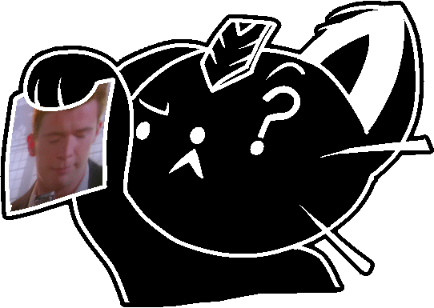
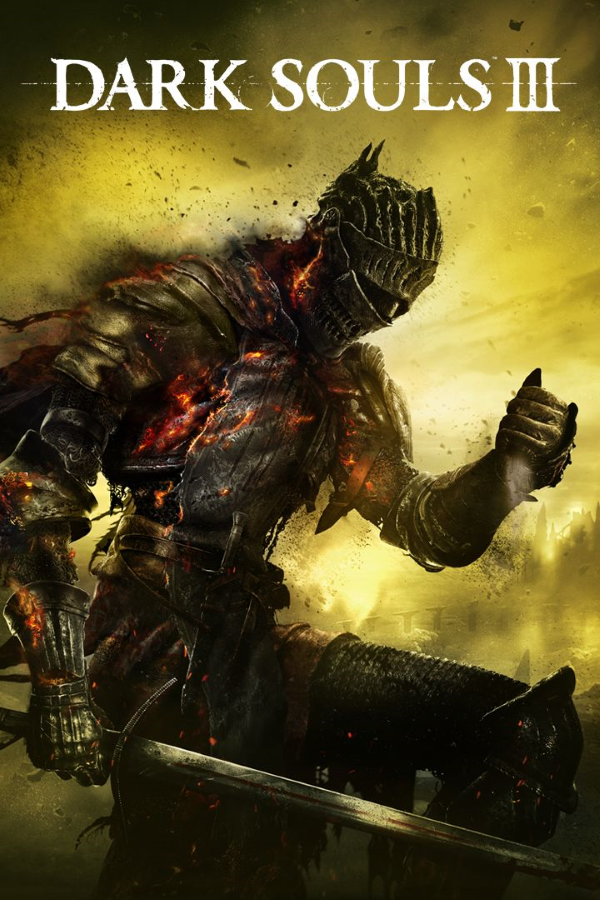
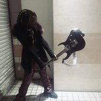

my hobbies
-
coding

-
playing video games (uncharted, overwatch, devil may cry, dark souls 3)

-
listening to music (lucy bedroque, che, prettifun)

-
editing videos (music videos, gaming videos, client ads)